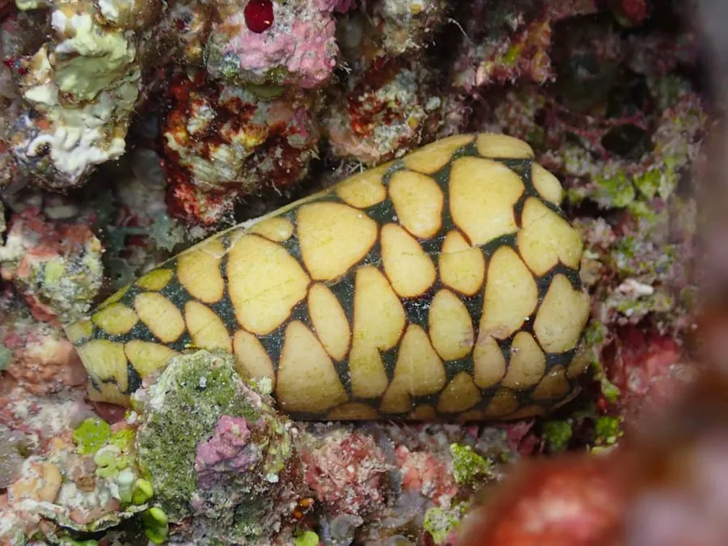

软体动物 · 动物界
大理石芋螺 Conus marmoreus

壳面像黑底白斑大理石纹的芋螺，是西方博物学文献中最早被描绘的芋螺之一，用毒箭齿捕食，被刺可能危及生命。
- 分类
- 门软体动物门纲腹足纲目新腹足目科芋螺科属芋螺属
- 栖息环境
- 印度洋—太平洋热带珊瑚礁和沙底，水深 1–30 m，夜行性
- 地理分布
- 印度洋—太平洋热带海域，从东非、印度到日本南部、澳大利亚和波利尼西亚，中国南海有分布
- 保护级别
- 暂无评估；中国未列入国家重点保护野生动物名录
物种志
大理石芋螺的贝壳呈倒圆锥形，壳面底色黑褐，布满白色的三角形和不规则斑点，像大理石的花纹，因此得名。壳口狭长，壳长一般 5–12 cm。它的花纹对比强烈，是贝壳收藏中的名品。
大理石芋螺分布于印度洋—太平洋热带海域，从东非、印度到日本南部、澳大利亚和波利尼西亚，中国南海有分布。它栖息于珊瑚礁和沙底，水深 1–30 m，多在夜间活动。大理石芋螺是肉食性动物，用箭齿和毒腺捕食其他软体动物和蠕虫；芋螺的箭齿像微型注射器，能快速把毒液注入猎物体内，被它刺中可能出现疼痛、麻木甚至呼吸困难，需要及时就医。它是西方博物学文献中最早被描绘的芋螺之一，17 世纪的博物学著作中就有它的图像。目前它没有IUCN 的正式评估，中国未将其列入国家重点保护野生动物名录。
形态与习性
- 食性肉食性，捕食其他软体动物和蠕虫
- 壳长一般 5–12 cm
- 毒性用带毒箭齿捕食，被刺后可能疼痛、麻木、呼吸困难
- 栖息深度珊瑚礁和沙底，水深 1–30 m
- 繁殖雌雄异体，交配后产卵囊
- 收藏价值黑底白斑对比强烈，是贝壳收藏中的名品
趣味知识
- 大理石芋螺的黑底白色三角斑像大理石花纹，是贝壳收藏中的名品。
- 它是西方博物学文献中最早被描绘的芋螺之一。
- 芋螺的箭齿像微型注射器，能快速把毒液注入猎物体内。